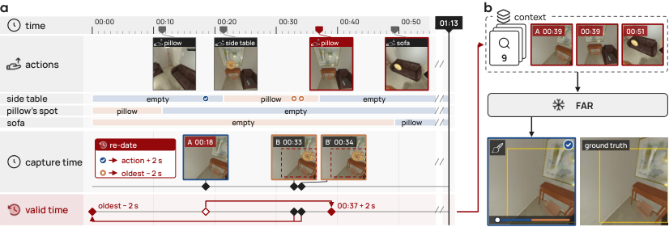
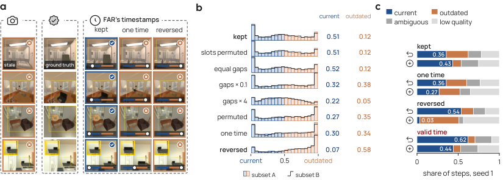
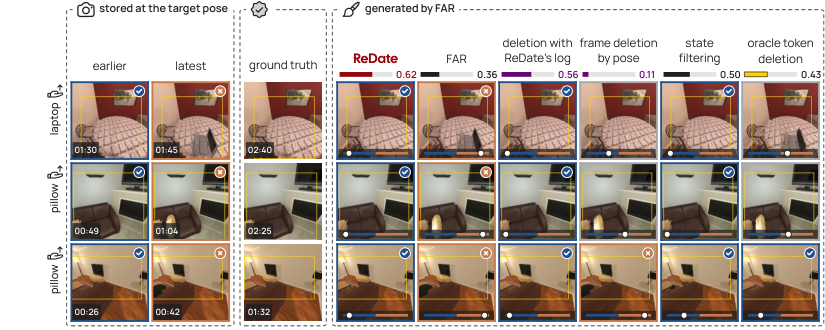
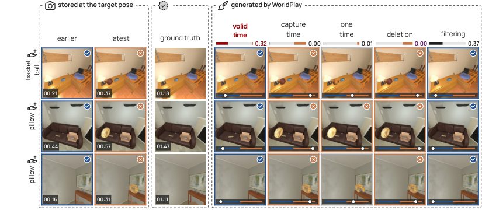

The deterministic theoretical results about timestamp rules and valid-time memory are machine-checked in Lean 4 in a supplementary file, ReDate.lean.
Abstract
Interactive video world models draw each frame from a memory bank of earlier frames stamped with their capture times. With frames, weights and noise fixed, reversing the timestamps of two views flips the state that generators of two families draw: they take the newest timestamp as the truth. That reading is right as long as states never return. After an agent undoes an action, the newest view of a region is outdated and the only view of the present is older; memories for changing worlds delete that older view, and memories that keep it hand the generator the past. Temporal databases separate when a record is stored from when its content holds, its valid time. ReDate keeps every frame and dates each retrieved token by its valid time, read from the agent's action log. The frozen generator then reads a reverted region as one that has just reached a new state, so ReDate needs no training. We prove that trusting the newest timestamp is right exactly when every current view is dated after every outdated one, that without a view taken after the return only the action log tells a reverted region from an up-to-date one, and that a generator able to draw from its own prediction gains more from re-dating than from deletion when the moved tokens keep little weight. After an undo, ReDate raises the share of FAR's steps showing the current state from 0.36 to 0.62 and HY-WorldPlay's from 0.003 to 0.19. We also propose a calibrated state metric to test any memory after undos.
Problem
Interactive video world models retrieve past frames stamped with capture times, and frozen generators treat the newest timestamp as truth. After an agent undoes an action, the newest view of a region is outdated and only an older view shows the present state, so existing memories either delete that view or hand the generator the past.
Approach
Timestamp-swapping probes with fixed frames, weights and noise show that generators like FAR and HY-WorldPlay follow a soft last-writer-wins rule. ReDate borrows the temporal-database notion of valid time: it reads the agent's action log to re-date retrieved frames and tokens by when their content holds, with no retraining of the frozen generator. Theorems characterize when newest-timestamp trust is correct, when only the action log can distinguish reverted regions, and when re-dating beats deletion. The deterministic results are checked in Lean 4.

Figure 3 : (a) The state tracker reads the action log and re-dates the frames of the target pose: a frame whose region is as at capture (tick) moves to 2 s after the restoring action, and the boxed tokens of a changed region (cross) move 2 s before the oldest retrieved frame. (b) The re-dated frame and the views after the last two actions join FAR’s context.

Figure 2 : FAR with fixed frames, weights and noise: (a) outputs under kept, one-time and reversed timestamps, (b) current and outdated shares under eight timestamp conditions on the 1,478 steps of subset A, and (c) outcomes on reverted and new-state steps at seed 1.
Results
After an undo, ReDate raises the share of FAR's steps showing the current state from 0.36 to 0.62 and HY-WorldPlay's from 0.003 to 0.19. A calibrated state metric is proposed for evaluating memories after undos.

Figure 4 : Reverted steps at seed 1, with accuracy on all 352 steps (yellow reads the simulator). FAR draws the outdated state, frame deletion by pose leaves a ghost, and ReDate draws the current state.

Figure 11 : HY-WorldPlay on the 218 seen reverted steps of seed 1 with both views. The earlier target-pose view is current and the latest is outdated; bars give the current share under five histories.
Memory rule
Acc.
At 0.2
Seen
Unseen
FAR
0.36
0.32
0.54
0.05
Decay by age
0.40
0.37
0.61
0.06
Sink at the present
0.52
0.49
0.80
0.05
Frame deletion by pose
0.11
0.03
0.15
0.05
Memory rules inside FAR at seed 1 on reverted steps (partial)